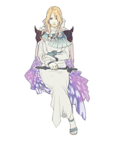

7 |
Prolog und Charaktere |
 |
|
Die Kriege der Vergangenheit sind beendet, die Lunarier („Lunarians“) und ihr Mond sind nur noch eine ferne Erinnerung. Friede ist auf dem Blauen Planeten eingekehrt und sein einstiger Wohlstand blüht wieder auf. Aber nun steht ein neuer Sturm der Veränderung bevor. Während die Kristalle leise leuchten, ziehen erneut dunkle Schatten herauf. Ein neuer Mond erscheint am Himmel ...
Gegen den Wunsch seiner Mutter, Königin Rosa, hat sich Ceodore, Prinz des Königreichs Baron, der Elitelufteinheit Rotschwingen („Red Wings“), angeschlossen, um sich seine Ritterschaft zu verdienen.
Die Rotschwingen werden von einem Monsterschwarm angegriffen. Nur Ceodore überlebt den Zwischenfall. Er wird von einem wandernden Schwertkämpfer aus seiner misslichen Lage befreit.

Ceodore Prinz des Königreichs Baron, Sohn von König Cecil und Königin Rosa, jenem Mann und jener Frau, die einst die Welt gerettet haben. Der Hof hat große Erwartungen an ihn, aber er selbst zweifelt an seinen Fähigkeiten. 
Cecil Ein Paladin lunarischer Abstammung. Seine Krönung zum König von Baron hat nichts an seinem Verantwortungsbewusst- sein seinem Volk gegenüber geändert, und sowohl das Militär als auch seine Untertanen sind ihm vertrauensvoll ergeben.

Rosa Eine Weißmagierin („White Mage“), Königin von Baron und die ebenso unerschütterliche wie liebevolle rechte Hand Cecils. Ihr Herz ist an der Seite Ceodores, der am Beginn einer Zeit voller widerstreitender Gefühle steht. 
Kain Ein ehemaliger Dragoner („Dragoon“) Barons. Um seine Schwächen zu überwinden, hat er sich auf den Gipfel des Bergs der Tortur („Mount Ordeals“) zurückgezogen. Seitdem hat man nichts mehr von ihm gehört. 
Cid Der Luftschiffmechaniker Barons. Obwohl sein Bart inzwischen weiß ist, weigert er sich beständig, sich in den Ruhestand zurückzuziehen und beweist immer wieder aufs Neue sein Können. Er steht Cecil und den anderen nahe und ist für Ceodore zu einer Art Ersatzgroßvater geworden. |
 |
 |
 |